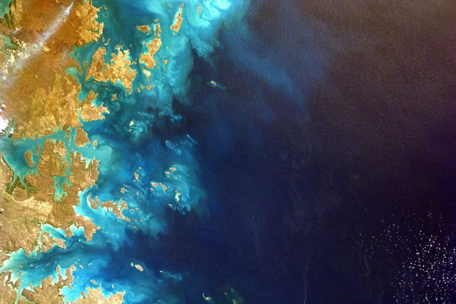
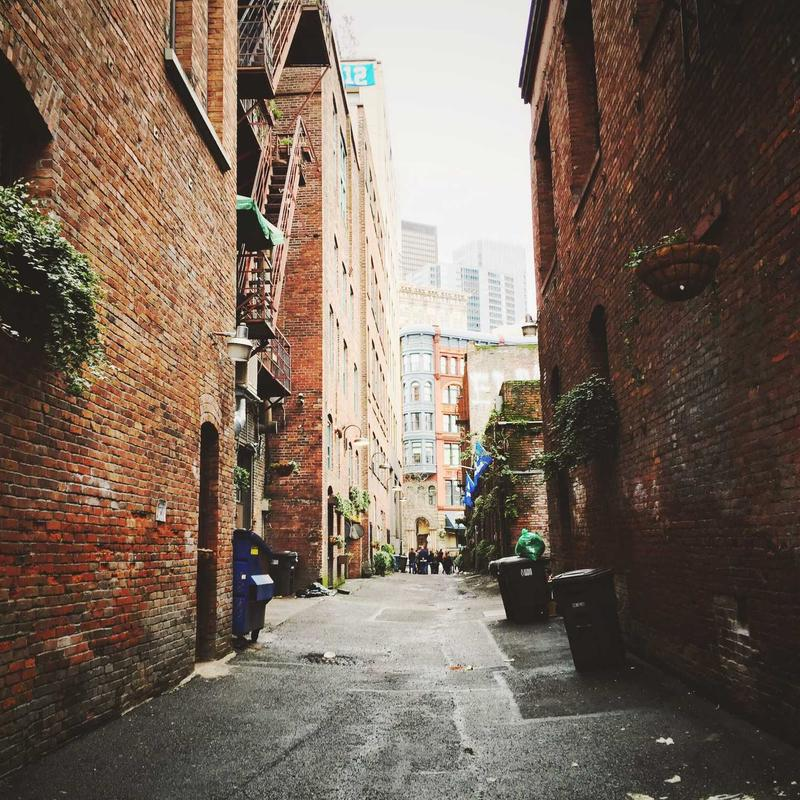

旅行随笔
穿行高地：一条公路的清晨
云雾还未散尽，公路在青绿山脊间划出优雅的弧线。这是一次关于慢速旅行的记录。
22 网页元素设计 · 导航 / 上图下文 / 左图右文 / 列表 / Tab（Flex + Grid 布局）
云雾还未散尽，公路在青绿山脊间划出优雅的弧线。这是一次关于慢速旅行的记录。
一台电脑、一页手绘草图，好的工具布置能让灵感更愿意停留。附桌面收纳清单。

当镜头升上高空，海岸线成为大自然最抽象的渐变画。一组令人惊叹的卫星影像。

URBAN TEXTURE · 城市肌理
红砖墙、消防梯与远处玻璃幕墙同框，老巷是城市最诚实的底稿。我们统计了一周内读者的专注阅读时段，发现周末的深度阅读时长显著高于工作日。
header、main、article 的正确打开方式
12 组高级感渐变色，直接复制取用
Grid 模板列与间距的常用组合
尺寸、线宽与视觉重量的统一